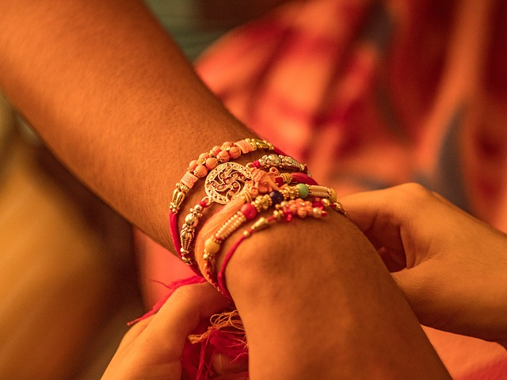

RAKSHA BANDHAN
The traditional Hindu festival 'Raksha Bandhan' (knot of protection) was came into origin about 6000 years back when Aryans created first civilization - The Indus Valley Civilization. With many languages and cultures, the traditional method to Rakhi festival celebration differs from place to place across India. Following are some historical evidences of Raksha Bandhan celebration from the Indian history.
Rani Karnawati and Emperor Humayun
The story of Rani Karnavati and Emperor Humayun is the most significant evidence in the history. During the medieval era, Rajputs were fighting Muslim invasions. Rakhi at that time meant a spiritual binding and protection of sisters was foremost. When Rani Karnawati the widowed queen of the king of Chittor realised that she could in no way defend the invasion of the Sultan of Gujarat, Bahadur Shah, she sent a rakhi to Emperor Humayun. The Emperor touched by the gesture started off with his troops without wasting any time.
Alexander The Great and King Puru
The oldest reference to the festival of rakhi goes back to 300 B.C. at the time when Alexander invaded India. It is said that the great conqueror, King Alexander of Macedonia was shaken by the fury of the Indian king Puru in his first attempt. Upset by this, Alexander's wife, who had heard of the Rakhi festival, approached King Puru. King Puru accepted her as his sister and when the opportunity came during the war, he refrained from Alexander.
Lord Krishna and Draupathi
In order to protect the good people, Lord Krishna killed the evil King Shishupal. Krishna was hurt during the war and left with bleeding finger. Seeing this, Draupathi had torn a strip of cloth from her sari and tied around his wrist to stop the bleeding. Lord Krishna, realizing her affections and concern about him, declared himself bounded by her sisterly love. He promised her to repay this debt whenever she need in future. Many years later, when the pandavas lost Draupathi in the game of dice and Kauravas were removing her saari, Krishna helped her divinely elongating the saari so that they could not remove it.
King Bali and Goddess Lakshmi
The demon king Mahabali was a great devotee of lord Vishnu. Because of his immense devotion, Vishnu has taken the task of protecting bali's Kingdom leaving his normal place in Vikundam. Goddess lakshmi - the wife of lord Vishnu - has became sad because of this as she wanted lord Vishnu along with her. So she went to Bali and discussed as a Brahmin woman and taken refuge in his palace. On Shravana purnima, she tied Rakhi on King Bali's wrist. Goddess Lakshmi revealed who she is and why she is there. The king was touched by Her and Lord Vishnu's good will and affection towards him and his family, Bali requested Lord Vishnu to accompany her to vaikuntam. Due to this festival is also called Baleva as Bali Raja's devotion to the Lord vishnu. It is said that since that day it has become a tradition to invite sisters on sravan pournima to tie sacred thread of Rakhi or Raksha bandan.
GURU NANAK DEV JI WITH BIBI NANKI
Meaning & Significance of Raksha Bandhan
The Meaning of Raksha Bandhan
Relationships are the essence of celebration and it holds true for any Indian festival. Each festival brings the family together which calls for a total festive environment. Raksha Bandhan is a celebration of one such relation - the relation of a brother and a sister. The relation is no where so celebrated as in India. Raksha Bandhan is a festival which celebrates the bond of affection between brothers and sisters. It is a day when the siblings pray for each others' well being and wish for each others' happiness and goodwill.
The name 'Raksha Bandhan' suggests 'a bond of protection'. On this auspicious day, brothers make a promise to their sisters to protect them from all harms and troubles and the sisters pray to God to protect their brother from all evil. The festival falls on the Shravan Purnima which comes generally in the month of August. Sisters tie the silk thread called Rakhi on their brother's wrist and pray for their well being and brothers promise to take care of their sisters.
The Significance
{kind=link}
Raksha Bandhan is now considered as a day to celebrate the sacred relation of a brother and a sister. Yet there have been examples in history where in rakhi has just been a raksha or protection. It could be tied by wife, a daughter or mother. The Rishis tied rakhi to the people who came seeking their blessings. The sages tied the sacred thread to themselves to safe guard them from the evil. It is by all means the 'Papa Todak, Punya Pradayak Parva' or the day that bestows boons and end all sins as it is mentioned in the scriptures.
Previously, Rakhi festival encompasses the warmth shared between the siblings but now it goes way beyond it. Some people tie Rakhi to neighbours and close friends signifying a peaceful co-existence of every individual. Rakhi Utsav was first popularized by Rabindranath Tagore to promote the feeling of unity and a commitment to all members of society to protect each other and encourage a harmonious Social life.
In today's scenario, the day has a different perspective. The occasion involves a pledge of life-time practice of moral, cultural and spiritual values. The values and the sentiments attached to the rituals of this festival are worth inculcating by the whole human race, the sentiments of harmony and peaceful coexistence. The festival of Raksha Bandhan assumes all forms of Raksha or protection, of righteousness and destroyer of all sin. The ritual of Rakhi tying has become so important that come what may, brothers and sisters try to visit each other place on this particular day tin order to bring back the oneness of the family, binding the family together in an emotional bond of love.
Raksha Bandhan Song
Bhaiyya mere, raakhi ke bandhan ko nibhana
bhaiyya mere, choti behan ko na bhulana
dekho ye nata nibhana, nibhana
bhaiyaa mere...
Ye din ye tyohaar khushi ka, paavan jaise neer nadi ka
bhai ke ujle maathe pe, behan lagaaye mangal tika
jhume ye saavan suhana, suhana
bhaiyya mere ...
Baandh ke hamne resham dori, tum se vo ummeed hai jodi
naazuk hai jo kaanch ke jaisi, par jeevan bhar jaaye na todi
jaane ye sara zamana, zamana
Shaayad vo saavan bhi aaye, jo behna ka rang na laaye
behan paraye desh basi ho, agar vo tum tak pahunch na paaye
yaad ka deepak jalana, jalana
bhaiyaa mere ...